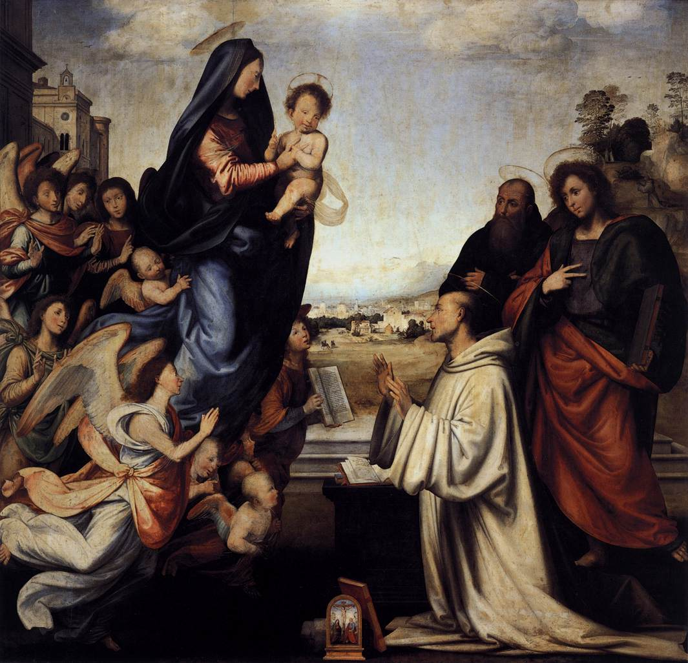

Uffizi Gallery
Florence, Italy
Artworks
Enthroned Madonna and Child with Angels and Prophets
Also known as the Santa Trinita Maestà. Cimabue was the last great Italo-Byzantine painter.

Madonna and Child (Rucellai Madonna)
A masterpiece of Sienese painting from the early Trecento.

Madonna Enthroned (Ognissanti Madonna)
One of Giotto's masterpieces, showing his revolutionary approach to naturalism and three-dimensionality.

Enthroned Christ with Madonna and Saints
Notable for its rigid, formal composition and emphasis on outline, different from Giotto's soft roundness.

Coronation of the Virgin
A masterpiece of the International Gothic style. Originally in the Camaldolese monastery of Santa Maria degli Angeli.

Adoration of the Magi
Masterpiece of the International Gothic style. Gentile da Fabriano was a master of naturalistic landscape and atmospheric effects. The lower left corner shows more natural light.

Battle of San Romano
Commemorates Florence's victory over the Sienese in 1432. One of three panels (others in London and Paris). Demonstrates Uccello's fascination with perspective.

The Madonna and Child with Saints
Also known as the St. Lucy Altarpiece. A masterpiece of early Renaissance painting.

Pippo Spano
Portrait of Filippo Scolari, known as Pippo Spano. Born in Florence, he became a general of King Sigismund and fought in the Hussite Wars, where he was beaten by Jan Žižka.

Hercules Slaying Antaeus
Depicts the mythological battle between Hercules and the giant Antaeus, who gained strength from contact with the earth. Hercules defeats him by lifting him off the ground.

Hercules and the Hydra
First large-scale Renaissance works about mythology. Depicts Hercules in battle with the Lernaean Hydra, one of his twelve labors.

The Baptism of Christ
Painted primarily by Verrocchio, but the leftmost angel, the water and rocks behind the angel are attributed to his young apprentice [Leonardo da Vinci](../artists/LeonardoDaVinci.md).

Annunciation
An early work by Leonardo showing the angel Gabriel appearing to the Virgin Mary. The painting demonstrates Leonardo's early mastery of perspective and atmospheric effects.

Landscape of the Arno Valley
One of the earliest dated works by Leonardo, this landscape drawing shows the Arno Valley near Florence. It demonstrates Leonardo's early interest in capturing natural phenomena and atmospheric perspective.

Portrait of a Man with a Medal of Cosimo de Medici
The man may be Lorenzo di Pierfrancesco, holding a medal depicting Cosimo de' Medici.

Adoration of the Magi
Notable for including portraits of the Medici family: - Cosimo was painted as the oldest magus, kneeling before the Christ - The other two magi are Giovanni and Cosimo's son, Piero the Gouty - The left most youth may be Lorenzo - The right, dark haired youth may be Giuliano, Lorenzo's brother - The figure with gold-colored cloak on the right is believed to be Botticelli's self-portrait

Primavera
Primavera means "Spring." The painting depicts a mythological scene in a garden: - At the right, the wind god Zephyrus pursues the virgin nymph Chloris. Chloris then transforms into Flora, goddess of Spring, shown to her left - At the left, Mercury dispels the storm - At the center stands Venus, goddess of Love, Beauty and Marriage Links to the Medici: the oranges are similar to the red palle (balls) in the Medici coat of arms. Flames on Mercury and Venus' neck and breasts are the fires of St. Lawrence (Lorenzo).

Birth of Venus
Depicts the goddess Venus emerging from the sea as a fully grown woman. In the left are Zephyrus (the wind god) and a nymph.

Adoration of the Shepherds
Painting by Filippino Lippi, son of Filippo Lippi.

Madonna of the Magnificat
Probably a wedding present or a gift for a birth of a child. The circular format (tondo) was popular for domestic devotional images. Changing size from 33 to 46 inches was typical at the time.

Adoration of the Magi
An unfinished painting showing Leonardo's innovative compositional approach: - Energetic horses, like rushing water - Madonna and the Child as the apex of a stable pyramid - Started with a dark wash that created the areas of shadow, then defined edges with brush

Cestello Annunciation
The strong emotions and color suggest Botticelli may have been a listener to Girolamo Savonarola, a monk from Ferrara who became the prior of San Marco. Savonarola was a preacher who advocated the destruction of secular art and culture, and was later tortured and executed.

Portrait of Francesco delle Opere
Considered an ancestor of portraits by Raphael, Perugino's most famous pupil.

Calumny of Apelles
A reconstruction of a lost painting by the ancient Greek painter Apelles, described by Lucian. May have been painted in defense of Girolamo Savonarola, depicting the dangers of false accusations.

The Vision of Saint Bernard
Depicts the mystical vision of Saint Bernard of Clairvaux, in which the Virgin Mary appeared to him. This work influenced Raphael and shows Fra Bartolommeo's mature style with soft modeling and harmonious composition.
Portrait of Maddalena Doni
A portrait of Maddalena Strozzi, wife of Agnolo Doni. The composition resembles that of the Mona Lisa, but with more details on the material of cloth and jewels. Painted as a pair with the Portrait of Agnolo Doni.

Portrait of Agnolo Doni
A portrait of the wealthy Florentine merchant Agnolo Doni (who also commissioned Michelangelo's Doni Tondo). The composition resembles that of the Mona Lisa, but with more details on the material of cloth and jewels. Painted as a pair with the Portrait of Maddalena Doni.

The Doni Tondo
The only preserved panel painting of Michelangelo. Also known as "The Dono Madonna" or "Holy Family with St. John the Baptist," this tondo (circular painting) was commissioned by the wealthy Florentine merchant Agnolo Doni. The unusual poses and vibrant colors influenced later Mannerist painters.

Portrait of Leo X
Leo X did not like Michelangelo, so Raphael rose to a level of power and wealth so high no other Italian artist had ever met. Raphael became the papal architect. The portrait shows the pope with cardinals Giulio de' Medici (the future Pope Clement VII) and Luigi de' Rossi.